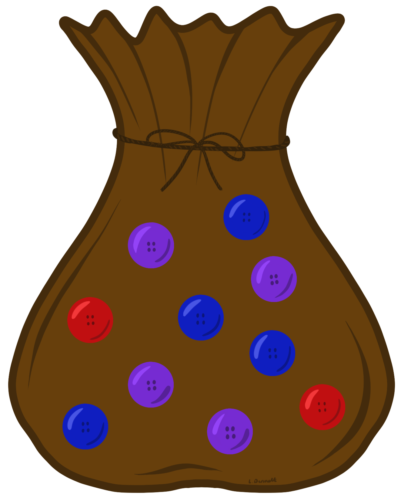
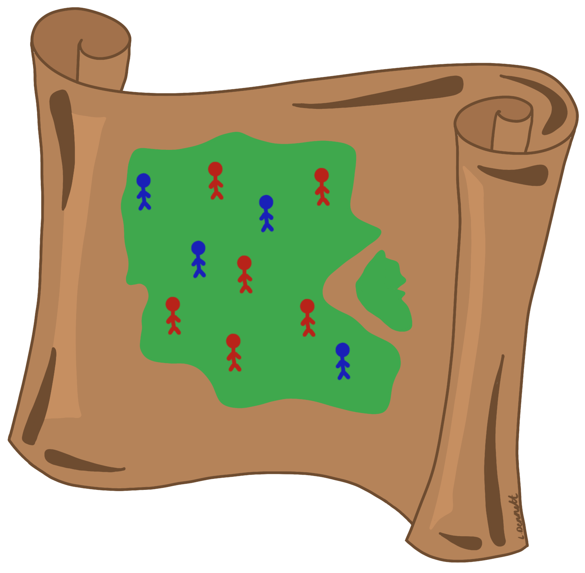
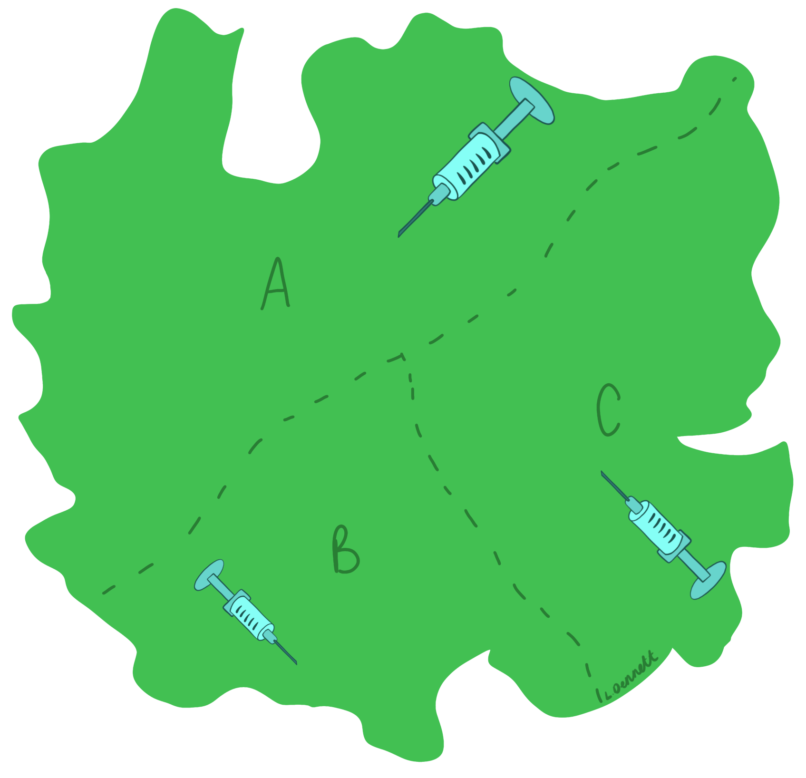

5 Probability Theory and Applications
This module provides an introduction to probability theory, focusing on the methods and applications rather than the code. Module 5 covers the foundations of both theoretical and experimental probability, the axioms of probability, and more detailed explanations of joint and conditional probability, with simple and easy-to-follow examples throughout.
5.1 Introduction to probability
5.1.1 Theoretical and experimental probability
In the most simple sense, the probability of an event is how likely it is to happen, or the chance or an event occurring. This is known as theoretical probability. For example, the theoretical probability of a fair coin landing on heads when flipped is 0.5. This classical definition is given formally in the formula below.
\[\text{theoretical probability} = \frac{\text{number of favourable (or desired) outcomes}}{\text{total number of possible outcomes}}.\]
In contrast, experimental probability, or relative frequency, is the actual probability of an outcome, found through using an actual experiment. For example, you could flip a fair coin 10 times, landing on heads 4 times, leading to an experimental probability of landing on heads of 0.4, which is smaller than the theoretical probability of 0.5. This is given formally in the formula below.
\[\text{experimental probability} = \frac{\text{number of times event actually occurs}}{\text{total number of trials in experiment}}.\]
When the number of trials is very large, the experimental probability is typically seen to tend towards the theoretical probability. This is known as the relative frequency theory of probability or the Law of Large Numbers. For example, if a fair coin is flipped 10 times, landing on head 4 times, this experimental probability of 0.4 is different to the theoretical probability of 0.5. However, the more times the coin is flipped, the closer the experimental probability should get to 0.5.
#create a fair 'coin'
coin <- c("heads", "tails")
#set seed for random sampling to be repeatable
set.seed(100)
#simulate flipping the coin 10 times
coin_sample_10 <- sample(coin, size = 10, replace = TRUE)
#experimental probability of flipping a fair coin 10 times
sum(coin_sample_10 == "heads")/10## [1] 0.4#set seed for random sampling to be repeatable
set.seed(100)
#simulate flipping the coin 10000 times
coin_sample_10000 <- sample(coin, size = 10000, replace = TRUE)
#experimental probability of flipping a fair coin 10000 times, it is much closer
#to the theoretical probability
sum(coin_sample_10000 == "heads")/10000## [1] 0.50145.1.2 Keywords
- Outcome: A possible result from a trial or an experiment
- Event: One single outcome from a trial or an experiment
- Sample space: A set of all possible outcomes of a trial (e.g. for tossing a coin once, the sample space is \(S={Heads, Tails}\))
- Mutually exclusive events: Two events that cannot occur at the same time.
- Let \(A_1, A_2, \cdots, A_k\) mutually exclusive events, then \(A_i \cap A_j = \varnothing\) for all \(1 \leq i \neq j \leq k\).
- Mutually exhaustive events: At least one of the events must occur.
- Let \(A_1, A_2, \cdots, A_k\) be exhaustive events, then \(A_1 \cup A_2 \cup \cdots \cup A_k = S\)
- Independent events: Two events are said to be independent if the occurrence of one does not affect the occurrence of the other.
- Let \(A\) and \(B\) be two independent events, then \(P(A\cap B)= P(A) \times P(B)\).
- Sample point: One of the possible outcomes in a sample space.
The following Venn diagrams provide a visual demonstration of how probabilities of events are written.
Figure 5.1: Venn diagrams different event probabilities
5.2 Axioms of probability
Before defining the axioms of probability, it is important to understand marginal probability. The marginal probability of an event \(A\), \(P(A)\), is the probability of only event \(A\) and does not take other events into consideration. For example, if event \(A\) is drawing an ace from a standard deck of cards, the marginal probability of \(A\) is given as: \(P(A) = \text{number of aces in the deck}/\text{total number of cards in the deck} = 4/52 = 1/13\). In this example, the probability of drawing an ace does not depend on any other cards being drawn, it only considers that event.
- Axiom 1: The probability of an event A is a non-negative real number, \[0 \leq P(A).\]
- Axiom 2: The probability of the sample space S is equal to 1, \[P(S)=1.\] (The probability that at least one of all possible outcomes occurring is equal to 1).
- Axiom 3: If A and B are two mutually exclusive events, then the probability of their union is the sum of their individual probabilities, \[ P(A \cup B)=P(A)+P(B).\] This is demonstrated visually with the below Venn diagram.

Figure 5.2: Venn diagram for probability of events A or B occurring when A and B are mutually exclusive (Axiom 3)
The following examples are used for demonstrative purposes to better explain the axioms of probability.
- Axiom 1: You cannot have the probability of landing on 1 when tossing a fair die be \(-1/6\), it must be non-negative. You can however have a probability of 0, for example, the probability of landing on 7 when tossing a fair 6 sided die is 0, given that there are no sides for the number 7.
- Axiom 2: The (theoretical) probability of landing on heads when flipping a fair coin is \(1/2\), and the probability of landing on tails is also \(1/2\). The sum of these two outcomes is equal to \(1\). Since you are certain that one of the two outcomes will occur (the coin must land on either heads or tails), the probability of heads or tails occurring is equal to 1.
- Axiom 3: When rolling a fair die, you cannot land on both sides for 1 and 6 at the same time. This means that these two events cannot happen at the same time and are therefore mutually exclusive. The probability of landing on a 1 or the probability of landing on a 6 in one roll is equal to the probabilities of each event occurring separately added (\(1/6 + 1/6 = 2/6\)).
5.3 Joint probability
Joint probability refers to the probability of two (or more) events/outcomes occurring at the same time, where the notation \(P(A \cap B)\) is used to denote the probability of events \(A\) and \(B\) occurring at the same time. This probability is shown in the below Venn diagram by the intersection of the two events.

Figure 5.3: Venn diagram for probability of events A and B occurring at the same time
5.3.1 Joint probability table
Joint probability tables are a useful tool for storing and organising the likelihoods of the different events and combinations when the variables are discrete, for example, a Bernoulli variable to indicate whether someone is vaccinated or not, or a categorical variable indicating a fever category (low, normal or high).
The marginal probability of an event can be obtained from a joint probability table through summing the joint probabilities across the relevant rows or columns for the event of interest. For example, in the figure below, to compute the marginal probability of event \(Y=1\) occurring, you sum the columns under that event, leading to the marginal probability \(P(Y=1)=a+b\). Formally, if both \(X\) and \(Y\) are discrete, the marginal probability of \(X\) and \(Y\) are given as \(f_X(x)=\sum_y f(x,y)\) and \(f_Y(y)=\sum_x f(x,y)\) respectively, where \(f(x,y)=P(X\cap Y)\) is known as the probability mass function.
Figure 5.4: Example of a joint probability table
Example: Suppose that an individual having a low or high fever indicates that the individual is infected with a disease A, where a high fever is more indicative that they are infected than a low fever. Also suppose that there is a vaccine for the disease that reduces the probability that an individual is infected. The likelihoods of that an individual is infected based on their vaccine and fever status is given in the below joint probability table.
| Low | Normal | High | |
|---|---|---|---|
| Vaccinated | 0.11 | 0.03 | 0.19 |
| Not Vaccinated | 0.20 | 0.04 | 0.43 |
To work out the probability that an individual that is not vaccinated and has a low fever is infected, you can look at the cell that corresponds to the row for ‘Not Vaccinated’ and the column for ‘Low’ fever. This probability is 20%.
Exercise: Following on from the example above, what is the probability that an individual that is vaccinated but has a high fever is infected with disease A?
5.4 Conditional probability
Conditional probability refers to the probability of an event/outcome occurring given that another event/outcome has already occurred. It focuses on the probability of outcomes in situations where there is additional information on outcomes that have already happened.
Formally, if \(A\) and \(B\) are events and \(P(B)>0\), then the conditional probability of \(A\) given \(B\) \((P(A|B))\) is given as \[P(A|B)=\frac{P(A\cap B)}{P(B)},\] where \(P(A\cap B)\) is the joint probability of \(A\) and \(B\) and \(P(B)\) is the marginal probability of \(B\).
Example: Assume you have a bag of 10 buttons that contains 2 red buttons, 4 blue buttons and 4 purple buttons.
To compute the conditional probability of drawing a blue button, given that the button drawn is not red, let event \(A\) be drawing a blue button from the bag, and event \(B\) be drawing a button from the bag that is not red.

To work out this conditional probability, use the above formula as follows.
\[ \begin{aligned} P(A|B)&=\frac{P(A\cap B)}{P(B)}\\ &= \frac{\text{number of blue buttons}/\text{total number of buttons}}{\text{number of buttons that are not red}/\text{total number of buttons}}\\ &=\frac{6/10}{8/10}\\ &=\frac{3}{4}=0.75. \end{aligned} \]
Therefore, the conditional probability of drawing a blue button, given that the button drawn is not red is 0.75.
Exercise: Following on from the example above, what is the conditional probability of drawing a purple button given that the button drawn is not blue?
5.4.1 Multiplication rule of conditional probability
The multiplication rule of conditional probability is found through rearranging the formula for conditional probability, resulting in the following formula. \[ P(A\cap B) = P(A)P(B|A) = P(B)P(A|B).\] This multiplication rule can be extended for more than two events. For events \(A_1, A_2, \cdots, A_k\), the multiplication rule of conditional probability is given as follows.
\[ P(A_1\cap A_2 \cap \cdots \cap A_k) = P(A_1)P(A_2|A_1)P(A_3|A_1\cap A_2)\cdots P(A_k|A_1\cap A_2\cap \cdots \cap A_{k-1}).\]
Example: Assume you have an island with 10 people, 6 women (red) and 4 men (blue), and want to select two people from the island (without replacement).
Let \(M_i\) be the probability that the \(i\)-th person is male, and \(W_i\) be the probability that the \(i\)-th person is female, for \(i=1,2\).

To compute the probability that both of the selected people are women, the above formula can be used as follows.
\[\begin{aligned} P(W_1 \cap W_2)&=P(W_1)P(W_2|W_1)\\ &= \frac{\text{number of women}}{\text{total number of people}}\times\frac{\text{number of women left}}{\text{total number of people left}}\\ &=\frac{6}{10}\times\frac{5}{9}\\ &=\frac{1}{3}. \end{aligned}\]
Therefore, the probability of selecting two women without replacement is \(1/3\).
To compute the probability that one person selected is male and the other is female, the above formula can be used as follows.
\[\begin{aligned} P(W_1 \cap M_2) + P(Μ_1 \cap W_2) =&P(W_1)P(M_2|W_1)+P(M_1)P(W_2|M_1)\\ =& \frac{\text{number of women}}{\text{total number of people}}\times\frac{\text{number of men}}{\text{total number of people left}} + \\ & \frac{\text{number of men}}{\text{total number of people}}\times\frac{\text{number of women}}{\text{total number of people left}}\\ =&\frac{6}{10}\times\frac{4}{9}+\frac{4}{10}\times\frac{6}{9}\\ =&\frac{24}{45}. \end{aligned}\]
Exercise: Following on from the example above, what would the probability be of selecting 2 men from the island without replacement?
5.4.2 Law of total probability
Let \(B_1, B_2, \cdots, B_k\) be a set of mutually exclusive and exhaustive events, then an event \(A\) can be represented as follows.
\[A = A \cap S = (A\cap B_1)\cup(A\cap B_2)\cup\cdots\cup(A\cap B_k).\] Given that \((A\cap B_1),(A\cap B_2),\cdots,(A\cap B_k)\) are then mutually exclusive events, Axiom 3 leads to the total probability formula as follows.
\[ \begin{aligned} P(A)&= P(A\cap B_1)+ P(A\cap B_2) + \cdots + P(A\cap B_k)\\ &= P(B_1)P(A|B_1)+ P(B_2)P(A|B_2)+\cdots+ P(B_k)P(A|B_k). \end{aligned} \]

(#fig:total prob)Venn diagram for law of total probability
Example: Assume that there are 3 regions in a country, regions A, B and C, with area proportions 50%, 20% and 30% respectively. Also assume in the year 20X5, respectively, 68%, 83% and 74% of the population will be vaccinated. This information is given in a table below.
| Region | Area Proportion | Percentage Vaccinated |
|---|---|---|
| A | 50% | 68% |
| B | 20% | 83% |
| C | 30% | 74% |

What is the probability that someone is vaccinated in the year 20X5? \[ \begin{aligned} P(\text{Vaccinated}) &= P(A)P(\text{Vaccinated}|A)+P(B)P(\text{Vaccinated}|B)+P(C)P(\text{Vaccinated}|C)\\ &=0.50\times 0.68 + 0.20\times 0.83 + 0.30\times 0.74 \\ &= 0.728 \end{aligned} \]
Therefore, in the country in the year 2X25, the probability that someone will be vaccinated is 72.8%.
To work out the probability that someone is from region A given that they are vaccinated, Bayes’ theorem can be used. This will be covered in Module 6.
5.5 Contingency tables
Contingency tables are similar to joint probability tables, but instead of showing the likelihoods of the different events and combinations, they display the bivariate frequencies of the discrete (categorical) data. In other words, instead of showing the probability of two events occurring at the same time, they show the frequency of the two events occurring at the same time. These tables are also known as frequency tables, two-way tables and cross tabs.
Similarly to the joint probability tables, the marginal totals are found through summing either the rows or columns dependent of the variable of interest. For example, the marginal total of event \(X=1\) occurring in the figure below is equal to \(a+c\).
Figure 5.5: Example of a contingency table
These tables are useful for identifying which events and combinations occur most often, in addition to identifying how many events occurred in total. However, they can also be used to find the probabilities of the different events and combinations occurring. In general, to compute the probability, an adapted version of the experimental probability formula is used, given as follows.
\[P(\text{Event}) = \frac{\text{Frequency of event}}{\text{Overall total}}\]
This formula can be adapted to compute either the joint, marginal or conditional probabilities as follows.
- Joint probability: \[P(\text{row i, column j})=P(\text{row i} \cap \text{column j}) = \frac{\text{joint total cell (i,j)}}{\text{overall total}}\]
- For example the joint probability of \(X=0\) and \(Y=1\) \[P(X=0 \cap Y=1) = \frac{b}{a+b+c+d}\]
- Marginal probability: \[P(\text{row i})= \frac{\text{marginal total for row i}}{\text{overall total}}\] or \[P(\text{column j})= \frac{\text{marginal total for column j}}{\text{overall total}}\] -For example, the marginal probability of \(Y=0\) would be \[P(Y=1) = \frac{a+b}{a+b+c+d}\]
- Conditional probability: \[P(A|B)= \frac{P(A\cap B)}{P(B)}=\frac{\text{joint probability of A and B}}{\text{marginal probability of B}}\] -For example, the conditional probability of \(X=0\) given \(Y=1\) would be \[P(X=0|Y=1) = \frac{P(X=0 \cap Y=1)}{P(Y=1)} = \frac{b}{a+b}\]
5.6 Useful resources
- Theoretical vs experimental probability: Theoretical vs. Experimental Probability|Differences & Examples
- Axioms of probability: Introduction to Probability, Statistics and Random Processes
- Joint probability: Joint Probability: Definition, Formula, and Example
- Conditional probability: Conditional Probability: Formula and Real-Life Examples
- Law of Total Probability: Introduction to Probability, Statistics and Random Processes